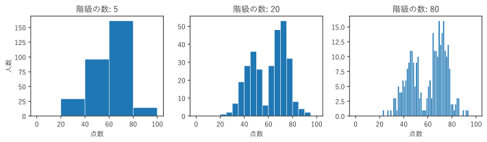
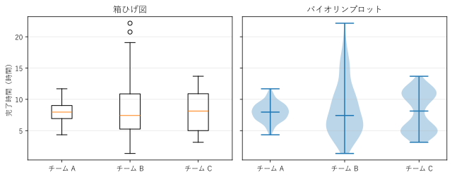
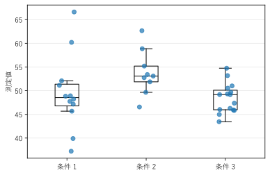
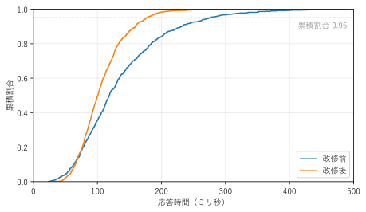

第 4 章 分布を見る
平均値だけでは、データがどのように散らばっているかは分からない。値がどの範囲に多く集まっているか、山はいくつあるか、極端な値はあるかといった、データの分布を見るためのグラフを、この章で扱う。
分布を要約する統計量
分布のグラフを読むには、次の統計量を知っておくと便利である。
統計量 |
意味 |
|---|---|
平均 |
値の合計をデータの個数で割った値。極端な値の影響を受けやすい。 |
中央値 |
値を小さい順に並べたとき、ちょうど真ん中にある値。極端な値の影響を受けにくい。 |
値を小さい順に並べたとき、全体の \(p`% がそれ以下になる値を :math:`p\) パーセンタイルという。中央値は 50 パーセンタイルである。 |
|
四分位数 |
25、50、75 パーセンタイルのこと。それぞれ第 1 四分位数、第 2 四分位数（中央値）、第 3 四分位数という。 |
四分位範囲（IQR） |
第 3 四分位数から第 1 四分位数を引いた値。中央の 50% のデータが散らばる幅を表す。 |
例えば、Web API の応答時間では、平均よりも 95 パーセンタイルや 99 パーセンタイルが重視されることが多い。平均が速くても、一部のリクエストが極端に遅ければ、利用者の体験は悪くなるからである。
ヒストグラム
ヒストグラムは、値の範囲をいくつかの区間（階級、ビン）に分け、各区間に入るデータの個数を棒の高さで表すグラフである。1 つの量的データの分布の形を見るのに使う。
ヒストグラムは、階級の幅（階級の数）によって見え方が大きく変わる。図 10 は、架空の試験の点数（300 人分）を、階級の数を変えて描いたものである。このデータには、45 点付近と 72 点付近の 2 つの山がある。

図 10 同じデータを、階級の数を変えて描いたヒストグラム
階級の数が 5 の場合、階級が粗すぎて、2 つの山が 1 つの山に見える。
階級の数が 20 の場合、2 つの山がはっきり分かる。
階級の数が 80 の場合、階級が細かすぎて、各階級の個数が少なく、偶然のでこぼこが目立つ。
階級の数の目安として、データの個数 \(n\) から求める Sturges の公式がよく知られている。
\(n = 300\) なら \(k \approx 9.2\) となり、およそ 9 個である。ただし、この公式はデータが正規分布に近いことを前提としており、データが多い場合や山が複数ある場合は階級が粗くなりやすい。公式の値は出発点とし、いくつかの階級の数で描き比べて、分布の特徴が見える幅を選ぶとよい。
24def create_figure() -> Figure:
25 """階級の数が 5、20、80 のヒストグラムを並べて描く."""
26 scores = make_scores()
27 fig, axes = plt.subplots(1, 3, figsize=(10, 3), sharey=False)
28 for ax, bins in zip(axes, [5, 20, 80]):
29 ax.hist(scores, bins=bins, range=(0, 100), color="C0",
30 edgecolor="white", linewidth=0.5)
31 ax.set_title(f"階級の数: {bins}")
32 ax.set_xlabel("点数")
33 axes[0].set_ylabel("人数")
34 fig.tight_layout()
35 return fig
hist() の range 引数で、階級の範囲を 3 つのグラフでそろえている。
サンプルの全体：ch04_histogram.py
箱ひげ図とバイオリンプロット
複数のグループの分布を並べて比べるには、箱ひげ図とバイオリンプロットが便利である（図 11）。

図 11 同じデータの箱ひげ図（左）とバイオリンプロット（右）
箱ひげ図は、分布を 5 つ程度の数値に要約して描く。
箱の下端と上端は、第 1 四分位数と第 3 四分位数である。箱の中に中央の 50% のデータが入る。
箱の中の線は、中央値である。
ひげは、箱の端から四分位範囲の 1.5 倍以内にある最も遠いデータ点まで伸びる（matplotlib の既定）。
ひげの外側のデータ点は、外れ値の候補として個別に描く（チーム B の上側の丸）。
バイオリンプロットは、分布の形を左右対称の曲線で描く。曲線の幅は、その値の付近にデータがどれだけ多いかを表す。
図 11 のチーム C は、5 時間付近と 11 時間付近にデータが集まった、山が 2 つの分布である。箱ひげ図では、チーム C の箱はチーム A より縦に長いだけで、山が 2 つあることは分からない。バイオリンプロットでは、くびれた形から 2 つの山がすぐに分かる。また、チーム B の分布が上側に長い裾を引いていることも、バイオリンプロットの方が読み取りやすい。
箱ひげ図は、四分位数を正確に比べたい場合や、グループが多い場合に向いている。分布の形に関心がある場合は、バイオリンプロットか、次に説明するストリッププロットを併用する。
27def create_figure() -> Figure:
28 """同じデータの箱ひげ図とバイオリンプロットを並べて描く."""
29 durations = make_durations()
30 fig, (ax_left, ax_right) = plt.subplots(1, 2, figsize=(9, 3.6),
31 sharey=True)
32 ax_left.boxplot(durations, tick_labels=TEAMS)
33 ax_left.set_title("箱ひげ図")
34 ax_left.set_ylabel("完了時間（時間）")
35
36 ax_right.violinplot(durations, showmedians=True)
37 ax_right.set_xticks([1, 2, 3], TEAMS)
38 ax_right.set_title("バイオリンプロット")
39
40 for ax in (ax_left, ax_right):
41 ax.grid(axis="y", alpha=0.3)
42 fig.tight_layout()
43 return fig
サンプルの全体：ch04_box_violin.py
ストリッププロット
データの個数が少ない（数十個程度まで）場合は、要約せずに、すべてのデータ点を描くのがよい。ストリッププロットは、グループごとに、データ点を縦一列に並べて描くグラフである。同じ値の点が重ならないよう、横方向に小さな乱数（ジッター）を加える。
図 12 は、3 つの条件で測定した値を、箱ひげ図の上にストリッププロットとして重ねたものである。


図 12 箱ひげ図にストリッププロットを重ねた図
箱ひげ図だけでは、条件 2 のデータが 9 個しかないことは分からない。点を重ねると、データの個数と実際の散らばりが分かり、要約の信頼性を読み手が判断できる。
18def create_figure() -> Figure:
19 """箱ひげ図にジッター付きの点を重ねて描く."""
20 rng = np.random.default_rng(3)
21 data = [rng.normal(50, 5, 12), rng.normal(55, 8, 9),
22 rng.normal(47, 4, 15)]
23 fig, ax = plt.subplots(figsize=(5.5, 3.6))
24 ax.boxplot(data, tick_labels=GROUPS, showfliers=False,
25 medianprops={"color": "black"})
26 for position, values in enumerate(data, start=1):
27 jitter = rng.uniform(-0.12, 0.12, len(values))
28 ax.scatter(position + jitter, values, color="C0", alpha=0.7,
29 zorder=3)
30 ax.set_ylabel("測定値")
31 ax.grid(axis="y", alpha=0.3)
32 fig.tight_layout()
33 return fig
ジッターは見やすさのための加工なので、横方向の位置には意味がない。ジッターの幅は、隣のグループと混ざらない程度に小さくする。
サンプルの全体：ch04_strip.py
経験累積分布関数（ECDF）
経験累積分布関数（ECDF）は、横軸に値、縦軸に「その値以下のデータの割合」を取った階段状のグラフである。\(n\) 個のデータ \(x_1, \ldots, x_n\) に対して、次の式で定義される。
ここで、\(\mathbf{1}(x_i \le x)\) は、\(x_i \le x\) のとき 1、そうでないとき 0 となる関数である。
ECDF はヒストグラムと違って階級を決める必要がなく、すべてのデータ点の情報をそのまま使う。また、縦軸の値からパーセンタイルを直接読み取れる。図 13 は、架空の Web API の改修前と改修後の応答時間（各 1,000 件）を比べたものである。

図 13 改修前と改修後の応答時間の ECDF
縦軸 0.5 の高さで横に線を引くと、中央値が読み取れる。改修後の中央値は約 100 ミリ秒、改修前は約 120 ミリ秒である。
縦軸 0.95 の高さ（破線）では、95 パーセンタイルが読み取れる。改修前は約 270 ミリ秒、改修後は約 180 ミリ秒であり、遅いリクエストが大きく減ったことが分かる。
曲線が左にあるほど、全体として応答が速い。
ECDF は、分布の形（山の位置や数）はヒストグラムほど直感的には読み取れない。分布の形を見るにはヒストグラムを、パーセンタイルの比較には ECDF を使うとよい。
16def create_figure() -> Figure:
17 """改修前と改修後の応答時間の ECDF を描く."""
18 rng = np.random.default_rng(4)
19 before = rng.lognormal(np.log(120), 0.5, 1000)
20 after = rng.lognormal(np.log(100), 0.35, 1000)
21
22 fig, ax = plt.subplots(figsize=(6.5, 3.8))
23 ax.ecdf(before, label="改修前")
24 ax.ecdf(after, label="改修後")
25 ax.axhline(0.95, color="gray", linestyle="--", linewidth=1)
26 ax.text(490, 0.93, "累積割合 0.95", ha="right", va="top", color="gray")
27 ax.set_xlim(0, 500)
28 ax.set_xlabel("応答時間（ミリ秒）")
29 ax.set_ylabel("累積割合")
30 ax.grid(alpha=0.3)
31 ax.legend(loc="lower right")
32 fig.tight_layout()
33 return fig
matplotlib 3.8 以降では、Axes.ecdf() で ECDF を描ける。
サンプルの全体：ch04_ecdf.py
まとめ
1 つの分布の形を見るには、ヒストグラムを使う。階級の幅を変えて描き比べる。
複数のグループの分布を比べるには、箱ひげ図やバイオリンプロットを使う。箱ひげ図は山が複数ある分布を見落とす。
データが少ないときは、ストリッププロットですべての点を描く。
パーセンタイルを比べるには、ECDF を使う。